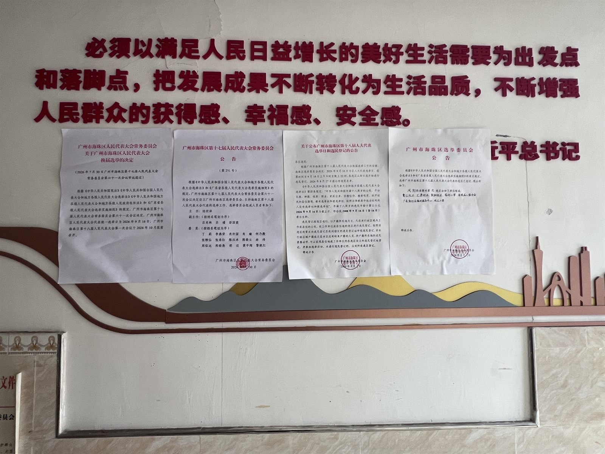
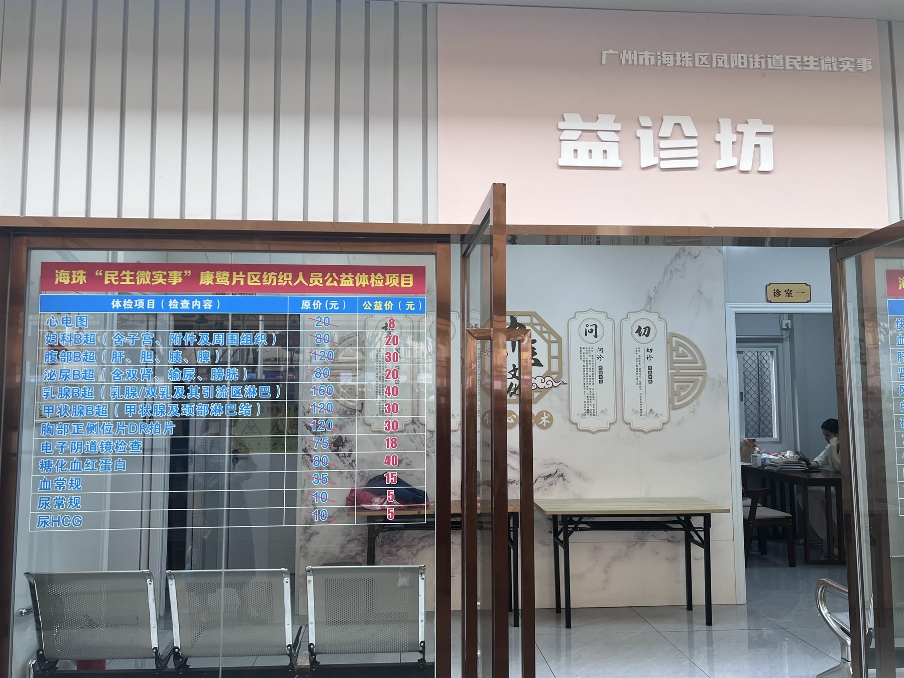
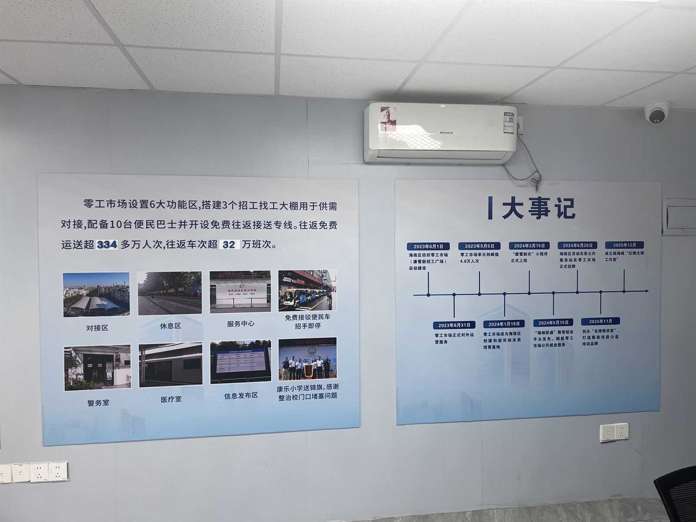
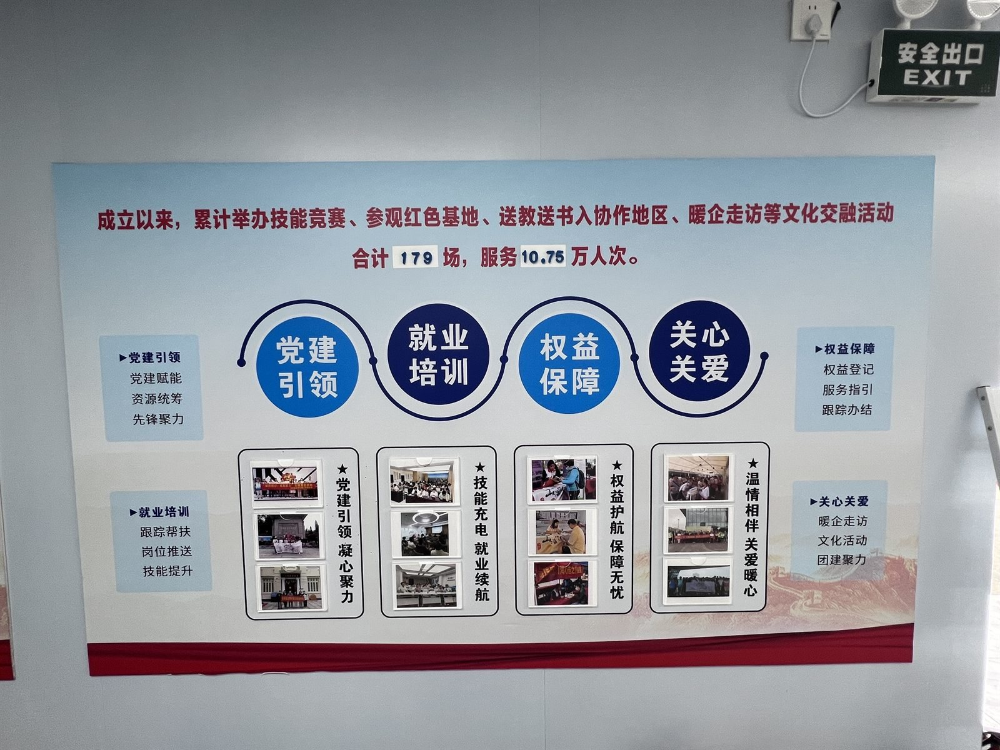
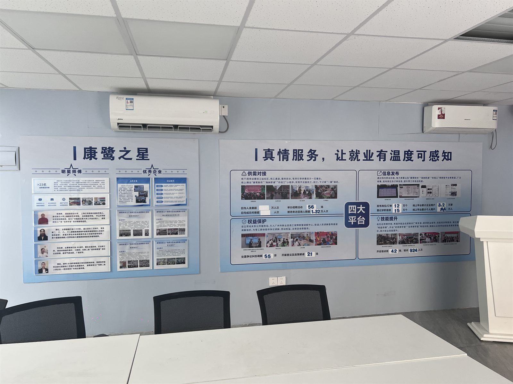
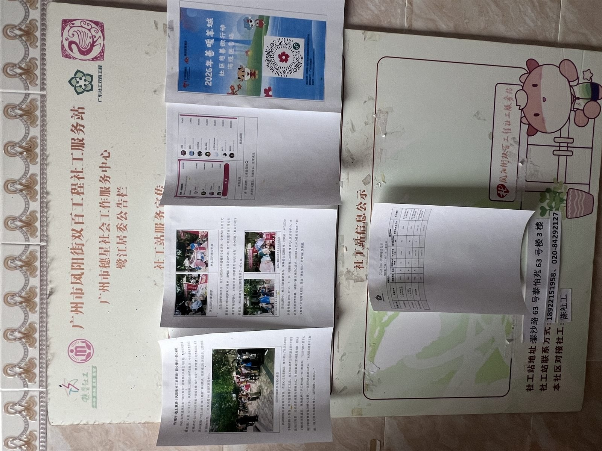

05 变迁记录有日期的节点 · 现场的物证
这里只收录有明确日期与出处的节点。每条都标注了它是已经发生还是规划 / 预期—— 我们不做逐年拆建动画，因为没有逐年可核的建筑资料；也不把规划愿景写成既成事实。
说明：早期旧改时间线在不同报道中存在出入（启动年份等）。这里以课题组整理的版本为准， 所有条目可在「关于研究 · 参考文献」中追溯；存在争议的条目已标注。
关于配图：时间轴上的照片都是课题组 2026 年 8 月在康鹭现场拍摄的物证—— 展板、公告墙、公示屏与街景。它们各自对应所在节点的年份与地点， 不用来替代文字本身；画面中出现的人一律按「环境影像」处理，不指认具体个人。
04 / Chronicle
16 个节点，串起一个产业型城中村从形成、鼎盛到改造的完整周期。
06 / Policy
2023 年 1 月 28 日，凤阳街道办发布《致康乐鹭江居民朋友的一封信》， 明确片区按「拆、治、兴」要求推进综合提升：
违法建设拆除与综合整治。2023 年康鹭片区全年拆违目标 20 万平方米，拆控违情况每周检查、每周通报。
人居环境治理提升，解决基础设施破旧、环境脏乱差、隐患丛生等顽疾；同步改造招工广场等公共空间。
片区整体规划建设与产业形态引导：推进产业转型升级和梯度有序转移，发展数字时尚、创意设计等业态。
广清纺织服装产业园位于清远石角镇，规划用地约 12000 亩，由省市区三级政府顶层设计， 规划进驻近 5000 家纺织服装企业，用工需求逾 10 万人。 园区以减免租金、免费宿舍、设备搬迁与购置补贴等措施吸引企业， 2023 年 1 月 31 日举行企业集体开业仪式。
但对多数厂主而言，80 公里意味着失去「当天接单、当天出货」的优势， 且印花、烫钻、洗水等配套工序在清远尚不完善。 有厂主的说法很朴素：「如果能赚钱，搬去哪里都愿意」——问题恰恰在于，搬过去之后还能不能赚到钱。
2023.12.31 首拆 → 2025.07.24 西南两侧地块开建 → 2025.11 第一批 9.6304 公顷集体建设用地征收公告。 改造分四期滚动实施，整体周期预计十年左右。在此期间，未被纳入首拆范围的工厂仍在运营。

Governance
标语与选举公告并排贴在同一面墙上。改造推进期间，这类墙面是政策与居民之间最直接、 也最日常的信息界面——它既发布规则，也接收情绪。

07 / Materials
招工广场由鹭江球场改建而来。以下几张是现场的宣传板、服务数据板与信息栏—— 它们不是新闻报道，而是这个片区治理与产业服务最直接的物料，也是「拆、治、兴」落到日常之后留下的痕迹。



